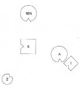
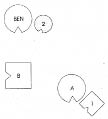
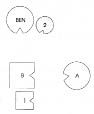
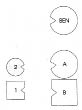

DAGMAR Adım Dagmar. Psikoterapistim, kendi ofisimde çalışıyorum. On yıldır Frank ile birlikteyim. Burada kendim için istediğim şey mesleki ve özel. Mesleki olarak şöyle; büyük bir heyecanla aile rekonstrüksiyonları [4] uyguluyorum. Ama bu yöntem çok yorucu ve saatler sürüyor. Kişinin kendini rahatça sınırlandırabileceği, az ve öz işleyen bir yöntem öğrenmenin iyi olacağını düşünüyorum. Bu noktada senden yararlanmayı umuyorum. Kişisel olarak bana gelince, unutulmaya, ihmal edilmeye gelmiyorum.
HELLINGER Bu yabancı bir duygu. Soru, bu duyguyu kimden ve kim için devraldığın.
DAGMAR Hemen dün, beş kuşak geriye giden, aile terapisi eğitimi için büyük bir sevgiyle çizdiğim soyağacımın başına oturdum ve daldım gittim. Şu ya da bu noktasına dikkatimi çevirdim ve aynı anda yine “Bu değil” diyen senin sesini işittim. Sesin çok katı ve kaldırıp atıcı geldi o anlarda kulağıma. Anneanneme çok bağlıyım ben. Evlenmeye ve iyi, güvence altındaki yaşam koşullarını bırakarak yoksul bir çiftlikte yaşayan bir adama gitmeye ancak on beş yılın ardından karar vermiş. Kocası kısa bir zaman sonra ölmüş, çiftliği anneannem yalnız başına işletmiş.
HELLINGER Anneanne daha önce evli miymiş?
DAGMAR Bilmiyorum.
HELLINGER Sendeki resim ne?
DAGMAR Zihnime gelen ilk resim, adamda, yani dedemde bir şeylerin doğru olmadığı, onun başka bir şeyin peşinde olduğu.
HELLINGER Benimki başka bir resim. Büyüklerine bakıyorum.
DAGMAR Onların anneannemi bırakmak istemediğini biliyorum.
HELLINGER Doğru.
DAGMAR Ona hayranmışlar.
HELLINGER Anneanne kime kızgın?
DAGMAR Kocasına kızgın olduğunu biliyorum. Ama sen onun büyüklerine mi kızgın olduğunu söylüyorsun?
HELLINGER Doğru.
DAGMAR Onlardan her zaman hayranlıkta söz ederdi. Kendisini son derece kabul görmüş, yani gerçekten istenilen bir insan gibi hissedermiş.
HELLINGER Belki de o adamla evlenmeyi hiç istemedi. Sonra da onu aldattı.
Dizim: Kız, babasının nişanlısıyla özdeşleşerek
onun duygularını üstlenir
DAGMAR Haddimi aşan bir rol üstlenip üstlenmediğimi görmek için ailemi dizmek isterdim. Bir rahatlama arıyorum.
HELLINGER Diz o halde.
DAGMAR Baba, anne ve büyük ebeveyni mi?
HELLINGER Hayır, baba, anne, çocuklar, bu kadarı yeterli. Ya da daha önceden evli ya da nişanlı olan var mıydı?
DAGMAR Babam nişanlıydı, ondan sonra bir kadınla daha ilişkisi olmuş.
HELLINGER İlişkiden çocukları olmuş mu?
DAGMAR Hayır.
HELLINGER Nişan neden bozulmuş?
DAGMAR Nişanlısını istememiş babam.
HELLINGER Elbette onunla özdeşleşmişsin. Tüm diğerlerini unutabiliriz.
DAGMAR Bu şaşırtıcı benim için.
HELLINGER Nişanlıyı da dizelim.
1. Resim

B Baba
A Anne
1 İlk çocuk, oğul
2 İkinci çocuk, kız (=Dagmar)
BEN Babanın eski nişanlısı
HELLINGER Baba nasıl?
BABA Hiç iyi değil. Yerimden edilmiş gibi. Dagmar’ın beni daha önceki nişanlıma doğru istediğimden daha fazla çevirdiği gibi bir duygu içindeydim. Buna kuvvetle karşı durmak zorunda kaldım. Sağ ve sol tarafımda iki kişiyi göz ucuyla, çok belli belirsiz görüyorum. Sırtımda da sevimsiz bir şeyler var.
HELLINGER Anne nasıl?
ANNE Kendimi rahatsız hissetmiyorum, ama adamla aramda hiçbir ortaklık hissetmiyorum. Yalnızca oğlumu ve kızımı görüyorum göz ucuyla. Ama yoğunlaştığım kişi öncelikle oğlum. Sırtımda hiçbir şey hissetmiyorum.
HELLINGER Oğul nasıl?
İLK ÇOCUK Kaçışın eşiğindeyim. Anne ve oğul gülerler.
HELLINGER Dagmar’ın temsilcisine Kız nasıl?
İKİNCİ ÇOCUK Kendimi oldukça kopuk hissediyorum; bir parça gözlemlendiğimi de.
HELLINGER Eski nişanlı nasıl?
BABANIN ESKİ NİŞANLISI Eski nişanlıma takılmış durumdayım.
HELLINGER Dagmar’ın temsilcisine Babanın eski nişanlısının sol tarafına geç.
2. Resim

HELLINGER Dagmar’ın temsilcisine Şimdi nasılsın?
İKİNCİ ÇOCUK Daha fazla aidiyet var.
HELLINGER Dagmar’a Bu özdeşleşme. Babanın onun hakkında konuşma biçiminin onda uyandırmış olduğu duyguları içinde canlandır. Bu duyguları sen ondan aldın.
DAGMAR Babam ondan pek az söz ederdi.
HELLINGER Az önce babanın onu artık istemediğini söylemiştin.
DAGMAR Ha, onu diyorsun. Evet! Doğru.
HELLINGER Kendini nasıl hissetmiş olmalı?
DAGMAR Babama kızgındı.
HELLINGER Doğru. Bir daha dikkate alınmadığın gibi duygulara kapıldığında nereden kaynaklandıklarını görürsün: Bunlar onun duyguları. Bu nedenle Frank ile yıllarca sürmüş tartışmalarınız boşunaydı. Dagmar güler. Yanlış adamı buldu.
BABA Nişanlıma doğru çekildiğimi hissediyorum. Onu artık istemediğim ya da sevmediğim doğru değil.
HELLINGER Anneye Kız eski nişanlının yanında dururken nasılsın? Daha mı iyi daha mı kötü?
ANNE Daha kötü. Onu özlüyorum.
HELLINGER Çünkü yüreğin anne yüreği.
Hellinger resmi değiştirir.
3. Resim

HELLINGER Şimdi nasıl?
ANNE Daha iyi.
BABA Bana iyi geldi.
İLK ÇOCUK Ben anne için üzülüyorum, çok yalnız.
HELLINGER Eski nişanlıya Sende bu sırada bir değişiklik oldu mu?
BABANIN ESKİ NİŞANLISI Evet. Adamın benim için bir yüzü var artık, ona bakabiliyorum.
İKİNCİ ÇOCUK Kendimi biraz uzakta hissediyorum ama yanımdaki nişanlıya çok güçlü bağlarla bağlı olduğumu fark ediyorum.
Hellinger çözüm resmini oluşturur.
4. Resim

HELLINGER Anneye Böyle nasıl?
ANNE İyi.
BABA Aile şimdi kendi içine kapandı. Zihnimden anında, nişanlı defteri şimdi kapandı işte düşüncesi geçti.
HELLINGER Dagmar’ın temsilcisine Kız nasıl?
İKİNCİ ÇOCUK Yere bakar Buraya tam olarak ait hissetmiyorum kendimi. Gerçi buradayım ama bir şekilde yabancıyım.
HELLINGER Eski nişanlı nasıl?
BABANIN ESKİ NİŞANLISI Ben iyiyim, özgür.
HELLINGER Dagmar’ın temsilcisine Şimdi seninle bir alıştırma yapacağım. Seni ilgilendirmediği, yalnızca Dagmar’ı temsil ettiğin için o kadar zor gelmeyecek sana. Annenin önünde diz çök, yerlere kadar eğil, ellerini yukarı doğru açarak kollarını uzat.
Temsilci annenin önünde eğilir.
HELLINGER Bir sürenin ardından temsilci yeniden doğrulmak istediğinde Henüz çok erken. Biraz daha öyle kal.
HELLINGER Anneye Neler oluyor sende? Bunun etkisi nasıl?
ANNE Biraz şöyle bir duygu: Onun önümde eğilmesini hak etmedim. Buna layık değilim.
HELLINGER Dagmar’ın temsilcisine Doğrul. Şimdi nasılsın?
İKİNCİ ÇOCUK Daha iyi.
Anneye gülümser, anne de ona gülümseyerek karşılık verir.
HELLINGER Dagmar’a Senin bundan sonra atman gereken adım, o ne hissederse hissetsin anneye yönelmek. Bu, nişanlıyla özdeşleşmeni çözer. Anne kendisini buna değer hissetmiyor, çünkü kocası ve onun eski nişanlısı arasında duruyor. Yine de çocuk için onun önünde eğilmek doğru bir hareket. Bununla anneye “Seni onurlandırıyorum” demiş oluyor.
BABANIN ESKİ NİŞANLISI Bu benim için de önemliydi.
HELLINGER Seni daha özgür kılıyor.
Dagmar’a Kendi yerini almak ister misin?
Dagmar yerine geçer ve yere bakar.
DAGMAR Eğilme bana çok dokundu. Ama o bunu almıyor.
HELLINGER Böyle bir şey söylemedi.
DAGMAR Layık olmadığını söyledi.
HELLINGER Bunu söylemeye hakkı var.
Gruba Eğilmenin etkisi karşısındakinin ne söylediğine bağlı değildir. Aile terapisinde çözüm asla başkasına bağlı değildir. Kimsenin olduğundan başka olmasına gerek yoktur. Ebeveynin başka olmasına gerek yoktur, ne de kimsenin özür dilemesine. Herkes kendinden yola çıkarak gerekeni yapabilir; sözgelimi onlar nasıl davranırlarsa davransınlar ana babanın önünde eğilebilir. Kişinin kendi ediminde yatar çözüm. Tamam, bu kadar.